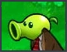
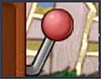
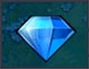
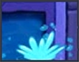
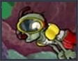
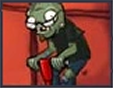

Vegezombis
Los zombis en este minijuego tienen cabeza de Lanzaguisantes y Nuez. Tienes que acabar con todos pero recuerda que el lanzaguisantes ataca y la nuez protege, así que este minijuego es difícil.

Vegezombis
Los zombis en este minijuego tienen cabeza de Lanzaguisantes y Nuez. Tienes que acabar con todos pero recuerda que el lanzaguisantes ataca y la nuez protege, así que este minijuego es difícil.

La bolera
En este minijuego tendrás que usar las nueces para derrotar a los zombis. Hay una nuez especial llamada cascanueces que explota en un área pequeña.

Tragaperras
Trata de usar una máquina de azar en la parte superior de la pantalla para conseguir plantas y defender tu jardín en lugar de seleccionarlas tú mismo, debes juntar un total de 2000 soles para ganar.

Semillas Caidas
Este minijuego es de niebla. Caen las plantas del cielo.

Bezombied
Debes alinear tres o más plantas iguales (intercambiando de posición dos plantas adyacentes) para hacerlas desaparecer y activar ataques contra los zombis que van apareciendo.

Invisibles
Los zombis son invisibles.

Viendo las estrellas
En este minijuego tienes que hacer una estrella gigante con frustrellas.

Zombiquarium
Es como Insaniquarium. Aqui hay que darle de comer a los zombis con cerebros.Si consigues 1000 soles lo conseguiras.

Bezombied twist
En lugar de deslizar una planta hacia un lado, seleccionas un bloque de 2x2 plantas y lo giras en sentido horario para alinear tres o más iguales y eliminarlas.

Pequeños pero matones
Es un minijuego con los zombis muy pequeños. Que sean pequeños no afecta a la dureza y,encima,vienen mas.

Portal combat
Vienen los zombis de portales para ir mas rapido, y para aparecer en cualquier lado de el jardin.

Formen Arrr
En es un minijuego de tejado las plantas que cojas se llenaran de esa planta por toda la columna.

Carreras de bobsleigh
En este minijuego solo salen los zombictor y el equipo de bobsleigh.

Zombies zumbados
Aqui todo va a toda velocidad.

Mola mazo
Tendras que derrotar a los zombis con un martillo de madera.

El ultimo batallon
Primero tendras 5000 soles y podras poner las plantas.Cuando termines de ponerlas, empezaran los zombis vendran, no se permiten productoras de sol o plantas gratis.

Vegezombis 2
Es como vegezombis pero los zombis tendran cabeza de Lanzaguisantes,Nuez,Apisonaflor, Nuez Cascara-Rabias, Jalapeño y Guisantrilladora.

La bolera 2
Es como La Bolera Pero con otra nuez,la nuez gigante.Derrota a todos los zombis de una fila.

Saltibanquis
Solo hay Zombis Saltarines y es un minijuego muy dificil.

La venganza del DR. zombie
Tienes que acabar con el Dr. Zombi otra vez, pero es más dificil.